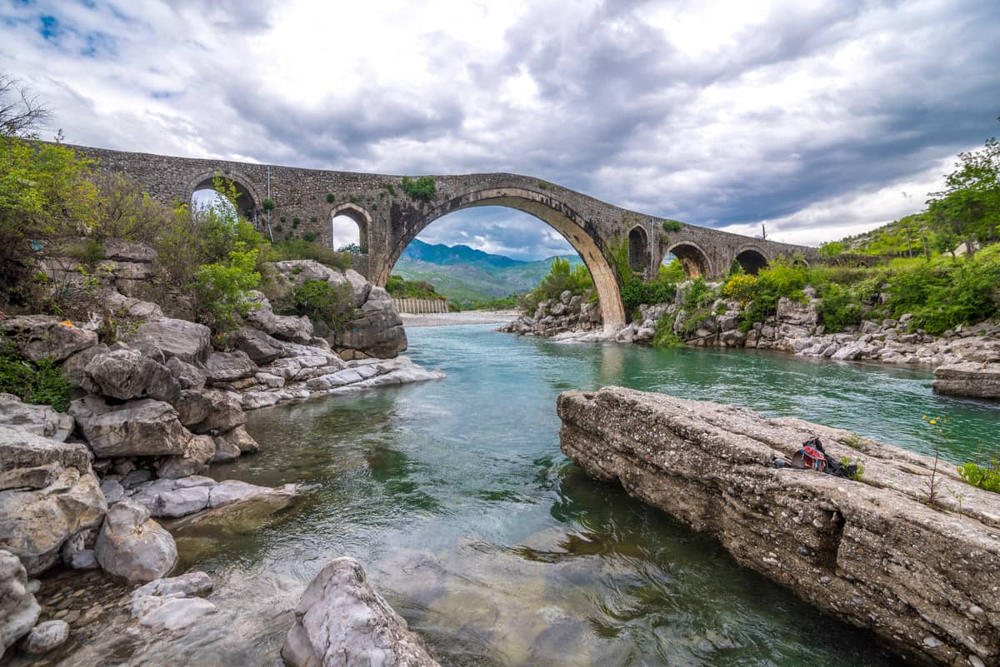
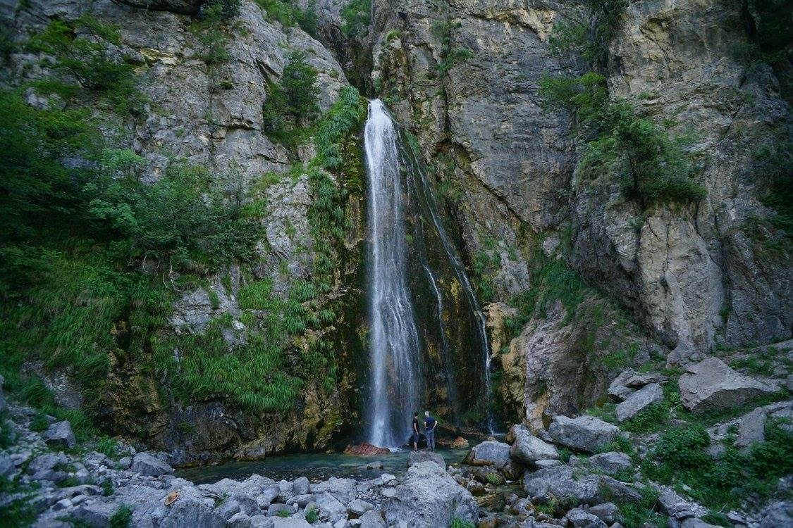

{% extends "layout.html" %} {% block title %} About Albanian Tourism {%
endblock%} {% block main %}
Walking in Albania
Start in Tirana and end in Berat!
With the Hiking & Trekking tour Walking in Albania, you have a 8 days tour package taking you through Tirana, Albania and
8 other destinations in Europe. Walking in Albania includes accommodation in a hotel as well as an expert guide, meals,
transport.
This fascinating, lesser-known Mediterranean country has a pristine, rugged and wild landscape waiting to be discovered.
It wasn't until the collapse of the People's Socialist Republic of Albania in 1991 that the world got its first glimpse
of the country within. Our trek is focussed in the remote Albanian Alps in the north, where ancient blood feuds and
folklore mark its past. We explore the remote regions of Theth and Valbonë on foot, where Agricultural life has remained
unchanged for centuries. We then have time to explore the historic towns of Berat and Krujë and delve into the captivating
history of this hospitable country.
Prices starting at €1,279 per person for a 8-day...
Start Tirana
The tour starts at our centrally located hotel in Tirana, Albania's
trendy capital. Those on the group flight arrive at lunch time and
will be transferred to the hotel (approx. 30 mins drive).Standard
Hotel

Drive via Shkodër and Rozafa Castle to Theth; short walk around the
village
We have an early start this morning and drive to Shkodër (approx. 2
hrs), where we visit the Castle of Rozafa and the city centre of one
of the oldest and most historic places in Albania. We recommend that
you also take this opportunity to shop for anything you might want for
the next three days (snacks, chocolate etc.) before we head into the
more remote regions. Our journey continues into the breathtaking
Albanian Alps and Theth National Park (approx. 3 hrs), an area admired
for its rich flora and fauna. After checking into our quaint
guesthouse in Theth, we set off on a gentle walk through the valley
nestled between the wonderful surrounding peaks, gaining an insight
into agricultural life as we pass locals going about their day. We
continue to the Roman Catholic Church of Theth, built in 1892, which
was once used as a health centre during the communist regime. The
highlight, however, is a visit to the shutting tower (or lock-in
tower) of Theth, known locally as ‘Kulla’. These historic stone
‘lock-in towers’ were used for protection of families that were
involved in blood feuds and this is one of the few that remains today.
Guesthouse

Walk to Grunas waterfall, Nderlyse and the 'Blue Eye of Kapre'
Theth Valley is predominantly an agricultural region, where age-old
farming practices and horse-drawn carts are still used today. We
observe rural life as we begin walking to Grunas Waterfall. From here
we continue on to Nderlyse where we find a string of natural water
pools and a feature known as the ‘Blue Eye of Kapre’. There is an
opportunity to swim here, so don't forget your swimming
things.Guesthouse
Trek over Valbonë Pass to Rragam village; transfer to Valbonë, home of
Albanian folk culture
We walk through some of the wildest scenery into the Tropojë District,
known as the home of Albanian folk culture. We firstly ascend through
forests and alpine pastures to reach the Valbonë Pass (1800m), from
where we take a few moments to enjoy the spectacular views down
Valbonë and Theth Valleys. We then follow a trail which brings us
alongside the Valbonë River, passing some beautiful waterfalls along
the way. We finish at the quaint village of Rragam, where the minibus
will wait for us to transport us to our hotel. Expect some rocky
mountainous terrain today, particularly as we descend. Standard Hotel
Follow a route below Rosi Peak, passing through forest to the
'White Circle'
Our route today takes us through beech and pine forests down Rosi Peak
and leads us onto the 'White Circle', where we enjoy panoramic views
of the peaks and valleys of the Albanian Alps. There is the option to
either do the full length of the 'White Circle' or walk as far as the
ridge of the 'White Circle', then back down the valley. For those who
wish to opt out of the 'White Circle' walk, you can instead walk
independently in the local area, or head to the slopes to collect some
mountain tea. Please note that the total ascent/descent is 1000m if
doing the full length.Standard Hotel
We take a boat on Komani Lake; continue to Kruje
After breakfast, we drive to Fierza (approx. 1.5 hrs). We then take a
boat through the beautiful Komani Lake (which takes approx. 2 hrs).
The boat journey allows us to take in the spectacular scenery whilst
we wind our way between high cliffs and towering peaks. Three
hydroelectric power plants have been built here at the lake, which
produces approx. 70% of Albania's electricity. We then drive for
another 2.5 hrs to Kruje, the centre of Skanderbeg's resistance to the
Ottoman invasion in the 15th century. Standard Hotel
Visit the Ethnographic Museum and the King Mosque in Berat
This morning we travel to Berat. On arrival, we enjoy a guided tour
around the old district of Berat, with its pretty white buildings
perched on the hill amid pine forests. Our tour includes a visit to
the Ethnographic Museum (a 18th-century Ottoman house) and the King
Mosque. We walk through the narrow cobbled streets to finally reach
Berat Castle on the slopes of Mount Tomorr, where we are rewarded with
breathtaking views. Within the castle walls are dwelling houses and
the Onufri Museum (Museum of Iconography). There is free time to enjoy
the other sites of Berat or to perhaps absorb the relaxed café culture
on the promenade. Our hotel is situated in Mangalem, the historic
quarter of Berat, where the castle peers down upon the area from its
hilltop.Standard Hotel
End Berat
Those on the group flight will be transferred back to Mother Theresa
Airport for their lunchtime flight to London (approx. 2-hour drive to
the airport).